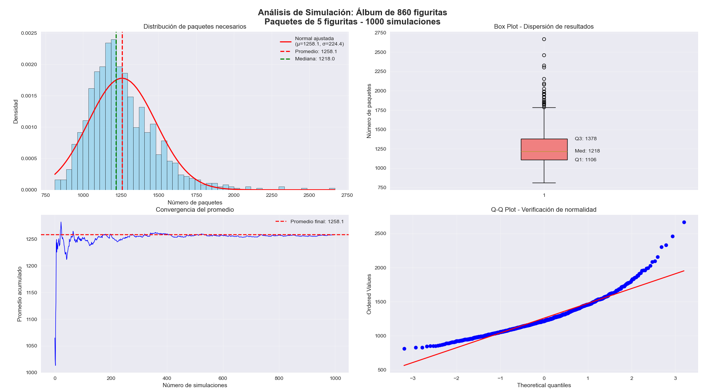

Python · Excel ·
Análisis Estadístico y Simulación
Análisis para la detección de tendencias salariales en IT. El proyecto aplica estadística descriptiva y visualización de datos en Python para validar modelos teóricos mediante experimentación computacional.
Ver detalles →